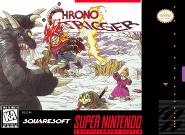

Chrono Trigger
Chrono Trigger acompanha a jornada do jovem Crono e seus amigos que viajam no tempo para impedir um cataclismo global causado por uma entidade alienígena chamada Lavos.

Unlike most other role-playing games at the time, combat in Chrono Trigger occurs in the same area where general navigation occurs, with all enemies visible on screen.
Chrono Trigger (クロノ・トリガー, Kurono Torigā) é um jogo de RPG eletrônico desenvolvido pela Square Co. Foi lançado para o console Super Nintendo no Japão em março de 1995, e uma versão aprimorada para PlayStation foi lançada em novembro de 1999. Uma outra versão do jogo para o console portátil Nintendo DS foi lançada em 25 de novembro de 2008 no Japão e um dia depois nos EUA.[17] O Chrono Trigger também foi portado para telefones celulares i-mode,[18] Virtual Console,[19] PlayStation Network,[20] dispositivos iOS,[21] dispositivos Android, e Microsoft Windows.[22] O jogo foi revolucionário para a época e exige bastante do console, é considerado por muitos um dos melhores jogos já feitos na história dos games.
O jogo foi desenvolvido por uma equipe que foi apelidada de Equipe dos Sonhos (The Dream Team): Hironobu Sakaguchi (produtor da série Final Fantasy), Yuji Horii (diretor da série de jogos Dragon Quest), Akira Toriyama (criador de mangás famosos, como Dragon Ball e Dr. Slump), o produtor Kazuhiko Aoki[23] e Nobuo Uematsu (músico de Final Fantasy). Toda a equipe trabalhou com a ideia de que este jogo teria de ser revolucionário, envolvendo múltiplos fins, uma história dramática, um bom sistema de batalhas e belos gráficos.[24] No jogo há inúmeras referências a eventos e nomes de mitologias, lendas e História. A trilha sonora de Chrono Trigger é considerada uma obra prima e rendeu um CD triplo no Japão, tornando-se uma das trilhas de videogames de maior sucesso da história. Este trabalho foi a estreia do compositor Yasunori Mitsuda,[25] que contou com o auxílio do veterano Nobuo Uematsu, responsável por outras trilhas de jogos clássicos da Square como Final Fantasy e Secret of Mana.

| Título | Chrono Trigger |
| Ano de Lançamento | 1995 |
| Desenvolvedora | Square Co. |
| Publicadora | Square Co. (SNES e PS1) Square Enix (NDS, celulares e Windows) |
| Diretores |
Yoshinori Kitase Akihiko Matsui Takashi Tokita |
| Produtores | Kazuhiko Aoki |
| Designers |
Akira Toriyama (Designer de personagens) Hironobu Sakaguchi (Supervisor) Yuji Horii (Supervisor) |
| Escritores |
Masato Kato Takashi Tokita Yoshinori Kitase Yuji Horii |
| Programadores |
Katsuhisa Higuchi Keizo Kokubo |
| Artista | Akira Toriyama (Designer de personagens) |
| Compositores |
Yasunori Mitsuda Nobuo Uematsu Noriko Matsueda |
| Série | Chrono |
| Plataforma | Super Nintendo |
| Conversões | PlayStation Nintendo DS i-mode iOS Android Microsoft Windows |